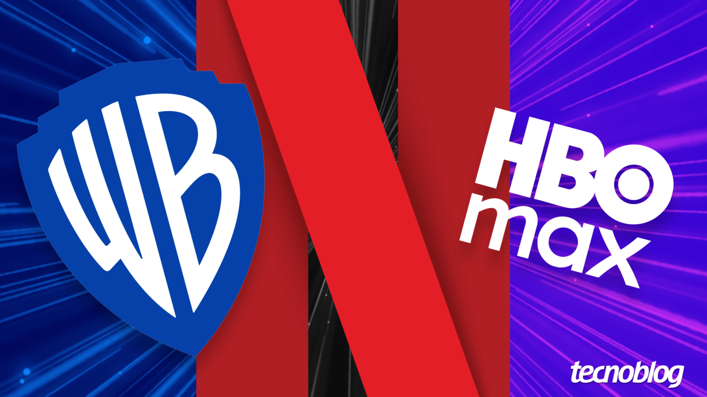

Netflix desiste de comprar a Warner e abre caminho para Paramount
Negociação bilionária não avançou e pode mudar o equilíbrio entre os grandes estúdios
Publicado hoje • Cinema / Streaming

Rumores envolvendo uma possível negociação entre gigantes do entretenimento voltaram a movimentar o mercado audiovisual. Informações recentes indicam que a Netflix teria desistido de avançar em uma tentativa de aquisição da Warner.
A possibilidade de uma fusão entre empresas desse porte gerou enorme repercussão dentro da indústria, já que poderia transformar completamente o cenário das plataformas de streaming.
Segundo analistas do setor, a decisão de recuar nas negociações pode estar relacionada à complexidade financeira e regulatória de uma operação desse tamanho.
Com a saída da Netflix das negociações, outras empresas passaram a ser mencionadas como possíveis interessadas em parcerias estratégicas com a Warner.
Entre os nomes citados por especialistas está a Paramount, que poderia avaliar novas oportunidades de expansão dentro do mercado global de entretenimento.
Mesmo assim, nenhuma negociação oficial foi confirmada publicamente até o momento, e muitas das informações continuam sendo tratadas como especulações.
O setor de streaming tem passado por mudanças rápidas nos últimos anos, com empresas buscando novas estratégias para competir em um mercado cada vez mais disputado.
Independentemente do resultado dessas negociações, especialistas acreditam que novas fusões e parcerias ainda podem surgir nos próximos anos dentro da indústria.